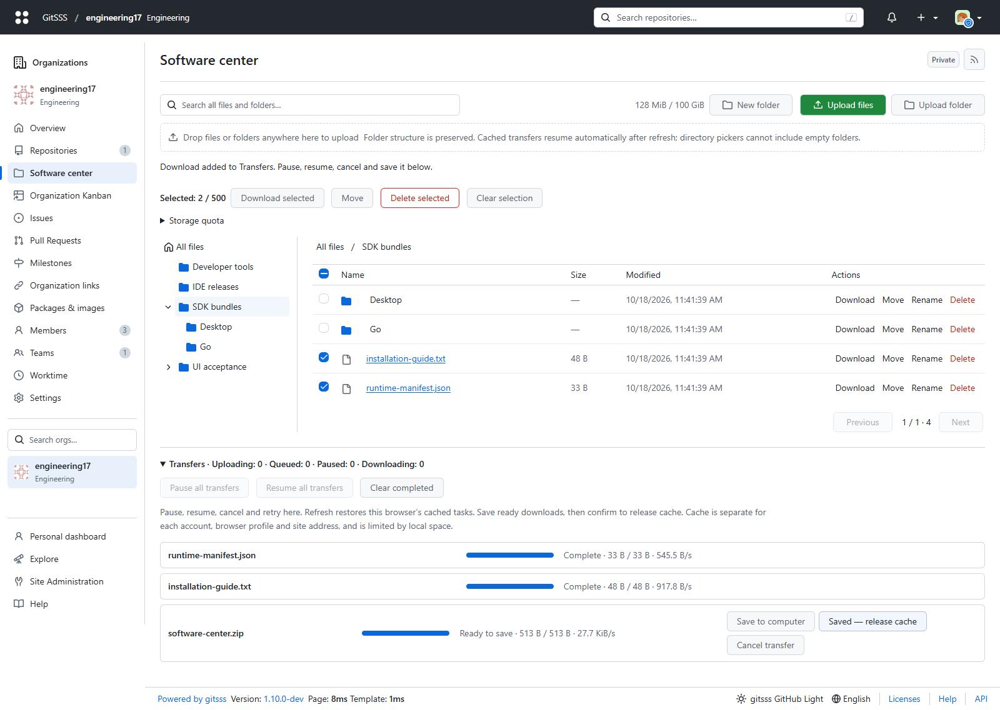
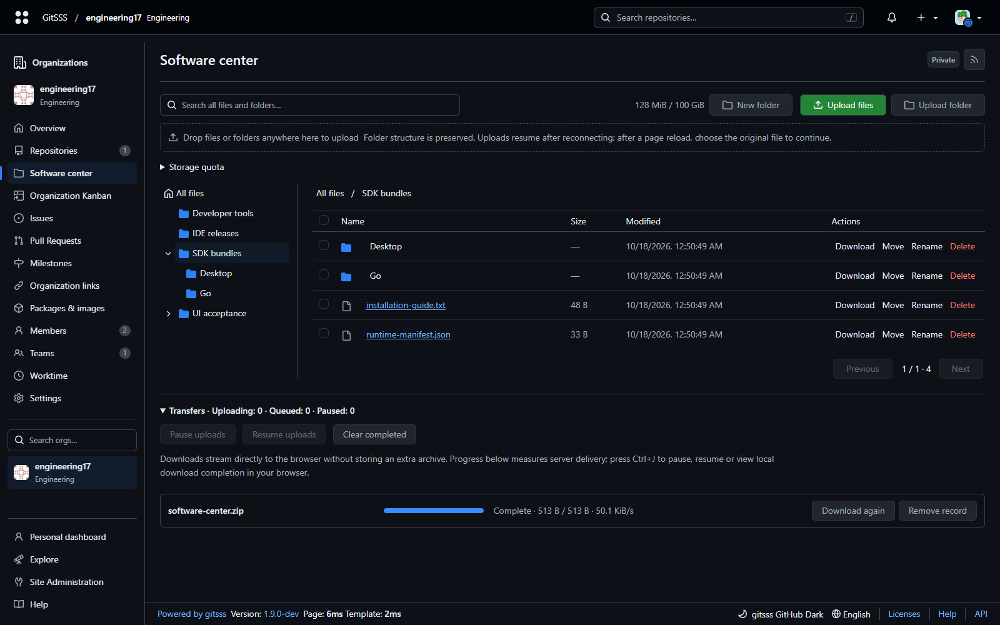
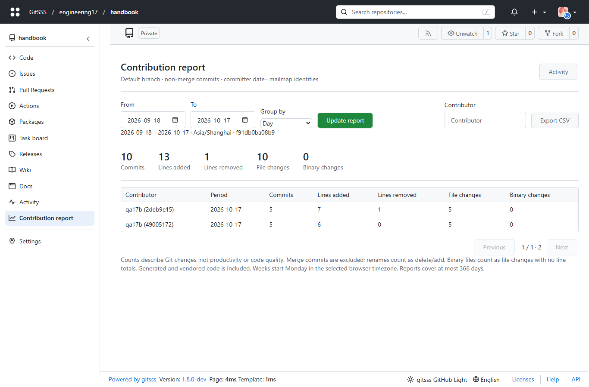

工作区、软件中心与研发统计
组织优先的桌面工作区：顶部统一搜索，左侧固定功能导航，组织英文标识与备注同时显示。只有一个组织时登录直接打开组织概览；/?view=organizations 保留组织目录入口。按 / 聚焦仓库搜索，编辑器输入不受影响。
软件中心
组织成员访问 /{organization}/-/software。支持拖拽上传文件和文件夹、文件夹选择、多级目录、重命名、目录和文件移动、批量选择下载与删除、全局名称搜索、分页、双并发断点上传、进度和速度显示。默认配额为每组织 100 GiB，包含正在上传的预留空间。组织所有者可以调整为 1 GiB 至 10 TiB，但不能低于已用与预留量。最多 20,000 个条目与 32 层目录。上传前检查实时磁盘空间，并保留至少 2 GiB 或卷容量 5%（取较大值），同时保守计入其他正在上传的预留量，避免挤占运行服务的空间。普通组织成员可上传、下载和管理文件；受限账号需要组织所有者身份。请保留正常备份，目录删除会删除其全部子项。
上传使用有界内存流式接收；相同内容在组织内仅保留一份 SHA-256 blob。逻辑大小仍逐文件计入配额。目录和文件名变更只更新元数据。只读元数据缓存最多保留 8 个组织、15 秒，每次成功写入即失效；权限每次请求重新检查。删除失败的 blob 进入持久化清理队列，于后续写操作重试。下载支持 HTTP Range、ETag 和 Last-Modified，私有文件每次请求都检查成员权限。上传失败、取消会释放预留配额与临时文件；分块上传预留在 7 天无活动后于下次写操作清理；旧单次上传预留保留 24 小时规则。
断点传输与批量管理
每块 8 MiB，校验 SHA-256 并同步落盘后才提交偏移；网络重试先核对服务器偏移。上传和下载在同一传输面板支持暂停、继续、取消和失败重试。选中文件先保存到浏览器 IndexedDB；刷新或重开浏览器后自动恢复活动任务，校验完整已上传前缀后续传。手动暂停的任务保持暂停。每用户在一个组织最多 32 个未完成上传，组织总计 128 个。取消上传会释放配额与部分文件。浏览器使用独立 Worker 校验，普通内网 HTTP 同样可用。
目录移动会拒绝循环、同名冲突、超过 32 层以及包含未完成上传的目录；批量删除在验证全部选择后一次提交，不会先删除一半。一次选择最多 500 个根条目。文件夹导入以每 500 条目录路径为一个原子批次，每个文件独立完成；中断后已完成的内容保留。目录选择器不暴露空目录，浏览器拖拽提供空目录时会保留。
多文件和目录下载使用虚拟 ZIP64 Store，直接读取已有 blob，不生成第二份压缩包、不把完整文件放入内存。下载票据属于当前用户，24 小时过期；选择内容被重命名、移动或删除后需重新选择。支持 Range/If-Range/ETag 续传。下载按 8 MiB 范围请求，中间分块只更新内存进度，完成时才保存服务器回执，避免大文件频繁重写组织元数据；验证 ETag、Content-Range 和长度后，将数据与偏移一起提交到本地缓存。传输面板显示进度与速度，暂停会中止请求，继续从已提交偏移恢复；失败自动退避重试，最终失败可手动重试。下载完成后在面板点击“保存到电脑”，确认“已保存，释放缓存”后才回收本地数据；普通 HTTP 无法可靠获知最终写盘是否成功。未确认前可重复保存，无需重新下载。取消会清除本地分块与下载票据，不删除源文件。反向代理须转发 PATCH、Range 和至少 8 MiB 请求体，不能缓存私有文件路由。
浏览器缓存与恢复边界
缓存按账号、组织与网站来源隔离，不同端口和浏览器配置不会共享。跨标签页通过事务租约避免重复传输；关闭或崩溃后最多等待 15 秒接管。完成上传、确认保存下载、取消任务会释放缓存；七天未使用的缓存于下次访问软件中心清理。清空已完成记录不会丢弃尚未保存的下载。浏览器存储配额与服务端配额分别计算；隐私模式、空间不足或清理网站数据可能无法自动恢复。缓存失败时上传会明确提示只能在当前页面续传；下载需启用网站存储。大文件受本地浏览器配额与 Blob 保存能力限制，不承诺任意大小都能自动恢复。服务器路径、数据库结构与 Git/SSH/LFS 均未改变；回滚 1.9 前先完成或取消页面下载。
API 与存储兼容性
页面与 API 使用相同登录和组织成员权限。GET /list?parent=&q=&page=1 每页最多 200 项；POST /mkdir、/rename、/delete 使用表单字段 parent/name/id；POST /upload?parent=&name=&size= 发送 application/octet-stream；GET /download/{id} 支持 Range。写入遵循站点跨来源保护。
文件仅新增在 APP_DATA_PATH/gitsss/extensions/software-center/{organizationID}/；元数据在现有 app_state 的 software-center-v1-* 键中。无数据库结构迁移，不移动或重写 Git、LFS、软件包、Actions 产物和日志。扩展采用每个数据目录单一 GitSSS 写进程。备份数据库和扩展目录；回滚到 1.8 可直接读取已完成文件；回滚前须完成或取消未完成的分块会话，旧版本写入元数据时无法保留新增会话字段。下载票据需重新创建。更早版本保留数据但不展示入口。详见 传输 API 与兼容性报告。
Docker / OCI 镜像中心
GitSSS 已包含 OCI Distribution /v2/ 服务，不需要部署另一个 Registry。镜像位于组织软件包中，使用已有软件包访问权限和内容去重存储。
docker login git.example.com
docker tag app:latest git.example.com/engineering/app:latest
docker push git.example.com/engineering/app:latest
docker pull git.example.com/engineering/app:latest自动化使用独立的软件包访问令牌。建议 HTTPS。HTTP-only 内网部署需要由客户端管理员在 Docker daemon 的 insecure-registries 中精确添加该 HOST:PORT，再按客户端说明应用设置；GitSSS 不修改其他人的 Docker 或 SSH 设置。
贡献统计
仓库活动中的贡献统计支持每日、每周（周一开始）、每月汇总、贡献者搜索和 CSV。以默认分支的非合并提交为准，使用提交者时间和浏览器时区，遵循 .mailmap。提交数、新增/删除行、文件变更次数、二进制变更分别计数。重命名按删除/新增计算，包含生成代码和第三方代码。统计是变更量，不是生产力或质量评分。
一个 Git 流最多处理 50,000 个提交，日期范围最多 366 天。超过限制会显式提示缩短范围。按 SHA、范围、时区缓存十分钟，分组切换不重新扫描 Git。每次只渲染 200 行；导出包含全部筛选结果，并转义电子表格公式。同名但不同邮箱身份显示短身份标识，使用 mailmap 可合并。
Git 与通知
Git HTTP refs 使用流式输出，只暂存协议识别所需的 14 字节，v2 直接以版本包开始，v0/v1 保留服务前缀。不缓存权限结果，不改变 refs、对象或 SSH 配置。首次推送卡片跳到具体提交，正常多提交推送跳到对比页面；已删除仓库的旧消息链接无法继续访问。
桌面演示与验证
1.9 分层验收记录：新增分块失败回滚、真实服务重启恢复、101 文件原生文件夹拖拽与空目录、ZIP64 多客户端解包和权限检查。自动可访问性扫描通过不等于完整人工认证；本机速度不代表局域网速度。
软件中心截图更新于 2026-10-18，贡献统计截图保留 2026-10-17 的隔离演示实例。Edge 已检查 29 类页面、明暗配色共 58 次，以及目录创建/重命名/搜索/批量移动删除确认、上传暂停与刷新续传、目录树与传输历史上限、键盘与焦点；1366 与 1600 像素桌面视口均无横向溢出。真实本机客户端已验证 64 MiB 流式传输、SHA-256、Range、权限与 CSRF，以及 Git v0/v1/v2、浅克隆/深化/部分克隆、LFS 和 Docker 29 的构建/推送/拉取。回环速度不代表局域网速度；每次部署仍须核对既有 SSH、Git/LFS 和服务状态。


